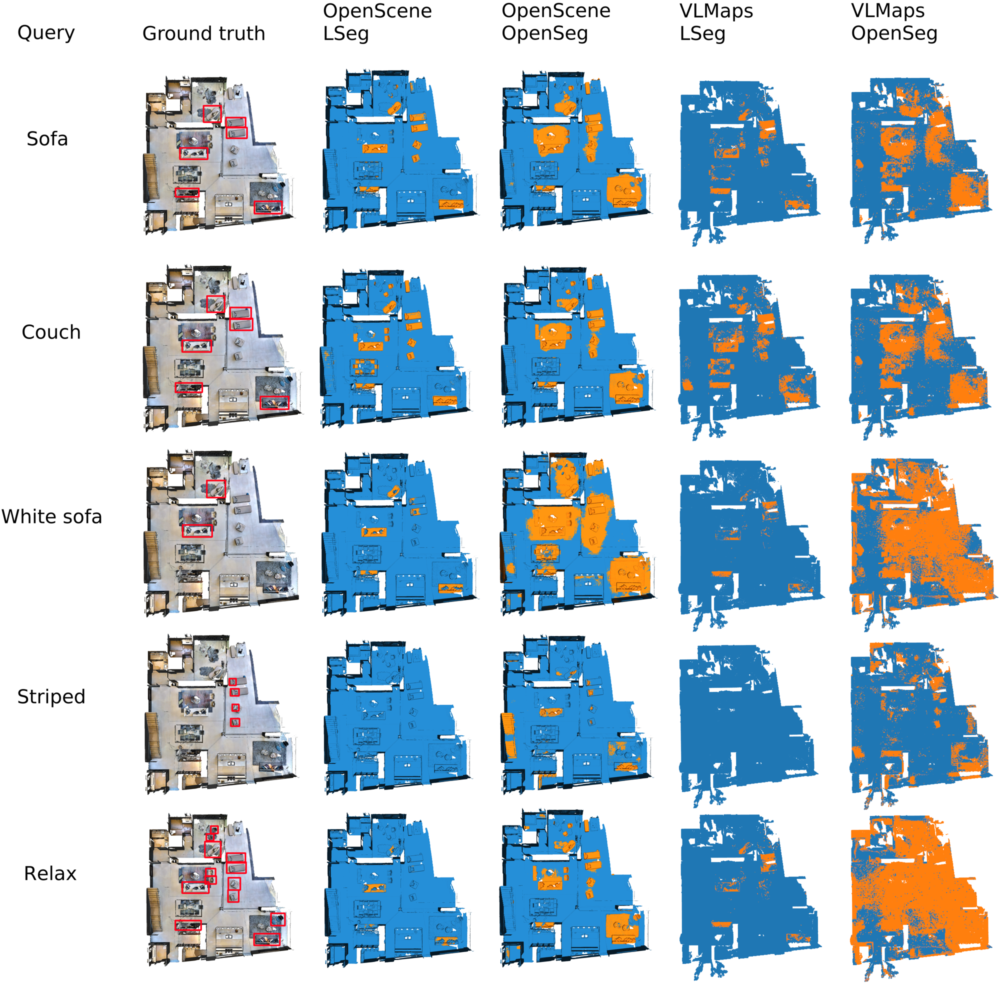
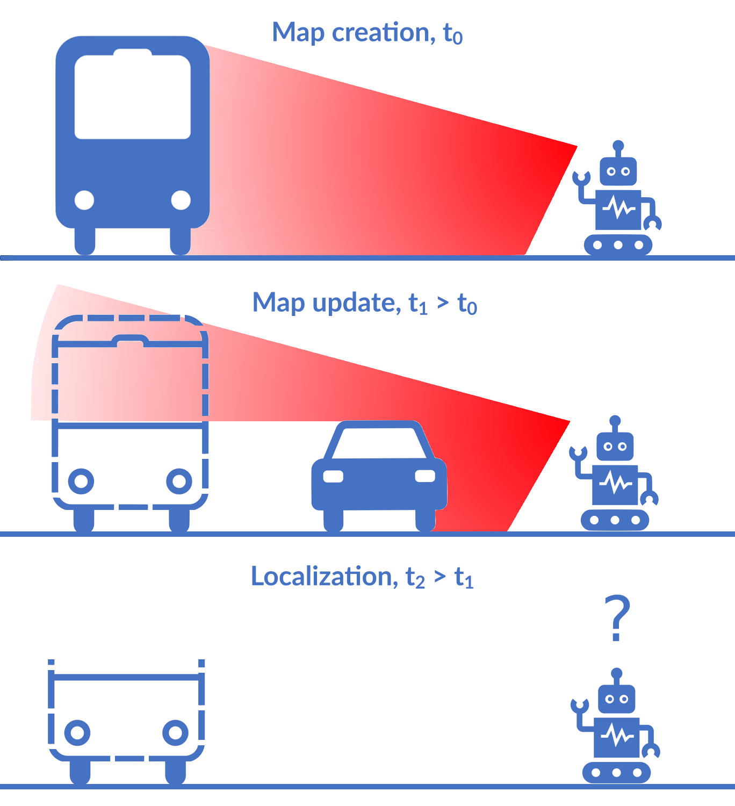
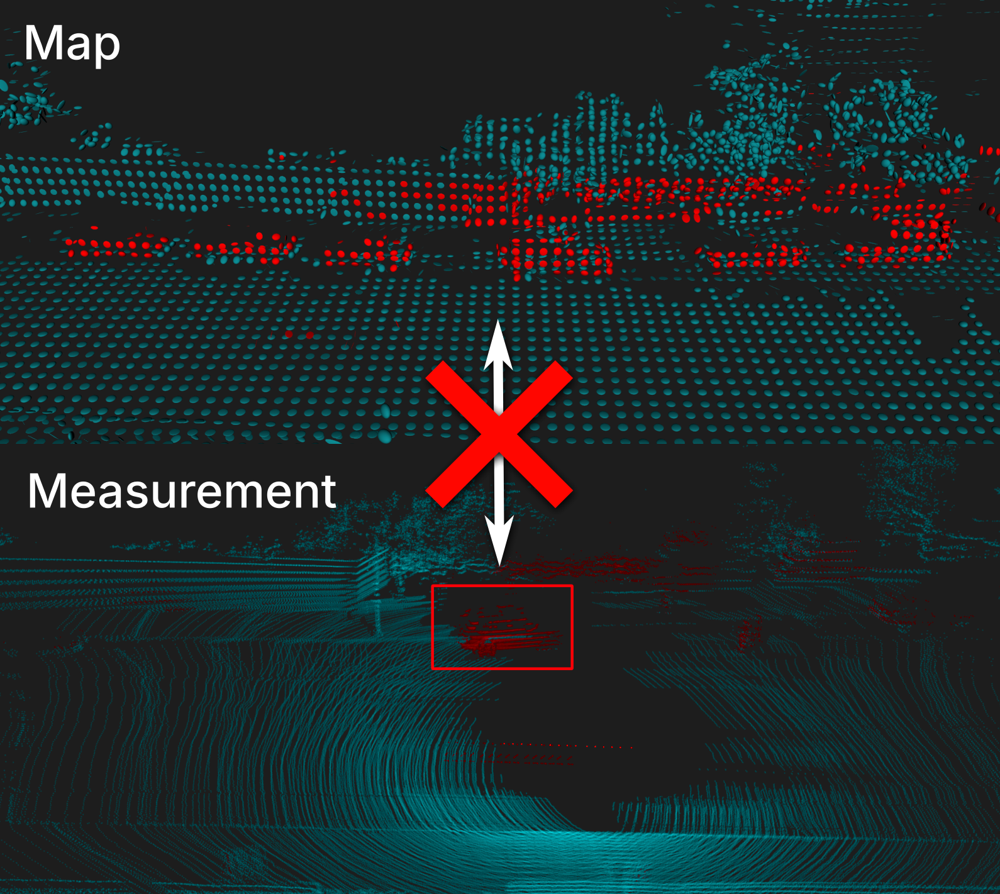

QuASH: Using Natural-Language Heuristics to Query Visual-Language Robotic Maps
ICRA 2026
Paper website
Embeddings from Visual-Language Models are increasingly utilized to represent semantics in robotic maps, offering an
open-vocabulary scene understanding that surpasses traditional, limited labels. Embeddings enable on-demand querying by
comparing embedded user text prompts to map embeddings via a similarity metric. The key challenge in performing the task
indicated in a query is that the robot must determine the parts of the environment relevant to the query.
This paper proposes a solution to this challenge. We leverage natural-language synonyms and antonyms associated with the
query within the embedding space, applying heuristics to estimate the language space relevant to the query, and use that
to train a classifier to partition the environment into matches and non-matches.
We evaluate our method through extensive experiments, querying both maps and standard image benchmarks. The results
demonstrate increased queryability of maps and images. Our querying technique is agnostic to the representation and
encoder used, and requires limited training.
Do visual language grid maps capture latent semantics?
IROS 2025
Paper website
Visual-language models (VLMs) have recently been introduced in robotic mapping using the latent representations, i.e.,
embeddings, of the VLMs to represent semantics in the map. They allow moving from a limited set of human-created labels
toward open-vocabulary scene understanding, which is very useful for robots when operating in complex real-world
environments and interacting with humans. While there is anecdotal evidence that maps built this way support downstream
tasks, such as navigation, rigorous analysis of the quality of the maps using these embeddings is missing.
In this paper, we propose a way to analyze the quality of maps created using VLMs. We investigate two critical
properties of map quality: queryability and distinctness. The evaluation of queryability addresses the ability to
retrieve information from the embeddings. We investigate intra-map distinctness to study the ability of the embeddings
to represent abstract semantic classes and inter-map distinctness to evaluate the generalization properties of the
representation.
We propose metrics to evaluate these properties and evaluate two state-of-the-art mapping methods, VLMaps and OpenScene,
using two encoders, LSeg and OpenSeg, using real-world data from the Matterport3D data set. Our findings show that while
3D features improve queryability, they are not scale invariant, whereas image-based embeddings generalize to multiple
map resolutions. This allows the image-based methods to maintain smaller map sizes, which can be crucial for using these
methods in real-world deployments. Furthermore, we show that the choice of the encoder has an effect on the results. The
results imply that properly thresholding open-vocabulary queries is an open problem.

Object-Oriented Grid Mapping in Dynamic Environments
MFI 2024
Paper website
Grid maps, especially occupancy grid maps, are ubiquitous in many mobile robot applications. To
simplify the process of learning the map, grid maps subdivide the world into a grid of cells
whose occupancies are independently estimated using only measurements in the perceptual field of
the particular cell. However, the world consists of objects that span multiple cells, which
means that measurements falling onto a cell provide evidence of the occupancy of other cells
belonging to the same object. Current models do not capture this correlation and, therefore, do
not use all available data for estimating the state of the environment. In this work, we present
a way to generalize the update of grid maps, relaxing the assumption of independence by modeling
the relationship between the measurements and the occupancy of each cell as a set of latent
variables and jointly estimating those variables and the posterior of the map. We propose a
method to estimate the latent variables by clustering based on semantic labels and an extension
to the Normal Distributions Transfer Occupancy Map (NDT-OM) to facilitate the proposed map
update method. We perform comprehensive map creation and localization experiments with
real-world data sets and show that the proposed method creates better maps in highly dynamic
environments compared to state-of-the-art methods. Finally, we demonstrate the ability of the
proposed method to remove occluded objects from the map in a lifelong map update scenario.

Localization Under Consistent Assumptions Over Dynamics
MFI 2024
Paper website
Accurate maps are a prerequisite for virtually all mobile robot tasks. Most state-of-the-art
maps assume a static world; therefore, dynamic objects are filtered out of the measurements.
However, this division ignores movable but non-moving - i.e, semi-static - objects, which are
usually recorded in the map and treated as static objects, violating the static world assumption
and causing errors in the localization. This paper presents a method for consistently modeling
moving and movable objects to match the map and measurements. This reduces the error resulting
from inconsistent categorization and treatment of non-static measurements. A semantic
segmentation network is used to categorize the measurements into static and semi-static classes,
and a background subtraction filter is used to remove dynamic measurements. Finally, we show
that consistent assumptions over dynamics improve localization accuracy when compared against a
state-of-the-art baseline solution using real-world data from the Oxford Radar RobotCar data
set.
